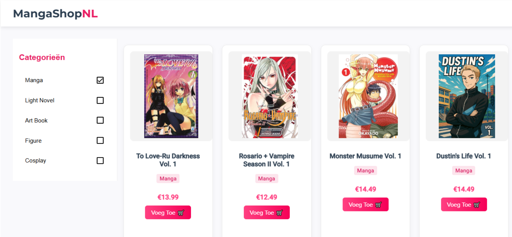
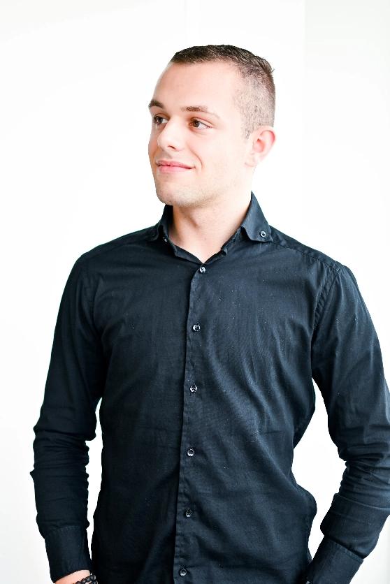
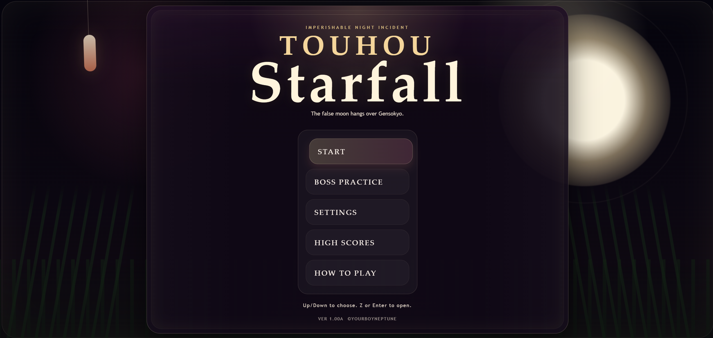

Manga Webshop
Een webshopproject met focus op productoverzicht, winkelwagen, gebruikerservaring en een nette frontend/backend structuur.
Student Informatica
Ik ben een vriendelijke, sociale en gedreven student Informatica. Ik sta altijd open om nieuwe dingen te leren en ik werk graag aan gebruiksvriendelijke en moderne websites en applicaties.

Mijn naam is Jordi van der Vlist en ik ben student Informatica. Ik vind het leuk om te bouwen aan digitale oplossingen en mezelf steeds verder te ontwikkelen binnen software en webdevelopment.
Geboortedatum: 15 maart 2003
Talen: Nederlands, Engels
Interesses: Lezen, koken, bouwen, zwemmen, gamen
Met deze portfolio wil ik laten zien wie ik ben, wat ik kan en aan welke projecten ik heb gewerkt.
Hieronder staan projecten die ik heb gedaan alleen of met anderen.

Een webshopproject met focus op productoverzicht, winkelwagen, gebruikerservaring en een nette frontend/backend structuur.

Dit is een game waarbij je objecten moet ontwijken. Je shiet zelf ook projectielen af en je hebt 10 levels
Oktober 2018 - februari 2020
Parttime
Februari 2020 - augustus 2021
Parttime
September 2021 - februari 2022
Februari 2022 - februari 2023
Parttime
Februari 2023 - juni 2023
Juli 2023 - heden
Naam: Jordi van der Vlist
Telefoon: 06-10394396
E-mail: jordi.vandervlist2003@gmail.com
Adres: Voorweg 89A, 2431AN Noorden
Voeg je eigen foto toe in de map images en noem die bijvoorbeeld profiel.jpg. Voor projecten kun je ook eigen screenshots of projectafbeeldingen toevoegen.